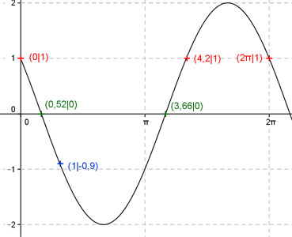
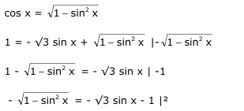

Aufgabe 220 Ergänzen Sie die Wertetabelle für x zwischen 0 und 2π: y = -√3 sin x + cos x x 1 0 oder 4,2 oder 2π y -0,,9 1 Amplitude = 2 (Berechnung siehe unten) ; Periode = 2π Berechnung der Nullstellen: 0 = -√3 sin x + cos x |-cos x -√3 sin x = -cos x |:-√3 1 sin x = ----- cos x |:cos x √3 sin x 1 sin x ------- = ----- mit -------- = tan x cos x √3 cos x 1 tan x = ----- --> √3 1 x = arc tan ----- = 0,52 gerundet oder 30,1° √3 x1 = 0,52 gerundet oder 29,8°. x2 = (π + 0,52) = 3,66 gerundet oder 209,7°. Berechnung der Amplitude A: Sie tritt an den Stellen x = 30,1° + (209,7° - 30,1°)/2 = 119,9° (120° gerundet) oder 2,09 oder bei (119,9° + 180°) = 299,9° (300° gerundet) oder 5,24 auf. A = |f(120°, 300°)| = |-√3 sin 120° + cos 120°| = = -√3 sin 300° + cos 300° = 2  Funktionswert an einer Stelle x ermitteln: 2 * 180° x = 2 oder ---------- = 114,6° π y = f(1) = -√3 sin 1 + cos 1 = = -√3 sin 57,3° + cos 57,3° = = -√3 * 0,841 + 0,54 = -0,9 gerundet. Berechnung der x-Werte für y = f(x) = 1 fx = 1 eingesetzt, existiert bei 0 bzw. 0° zwischen π und 2π bzw. 180° und 360° und bei 2π bzw. 360° (siehe Graph). 1 = -√3 sin x + cos x  1 - sin2 x = 3 sin2 x + 2 √3 sin x + 1 |+ sin2 x 1 = 4 sin2 x + 2 √3 sin x + 1 |-1 sin x (4 sin x + 2 √3) = 0 sin x = 0 für x1 = 0 oder 0° x2 = 2π oder 360° 4 sin x + 2 √3 = 0 |-2√3 4 sin x = -2 √3 |:4 sin x = - √3/2 --> x3 = arc sin - √3/2 = -1,047, liegt nicht im Bereich zwischen 0 und 2π. x3 = (1,047 + π) = 4,2 gerundet oder 240,6°.